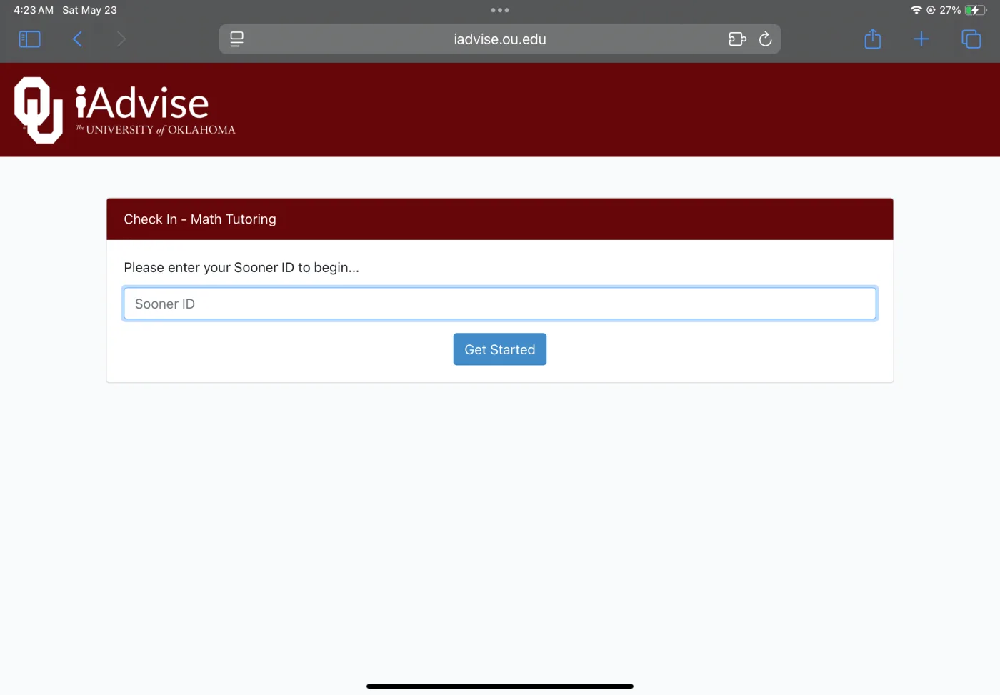
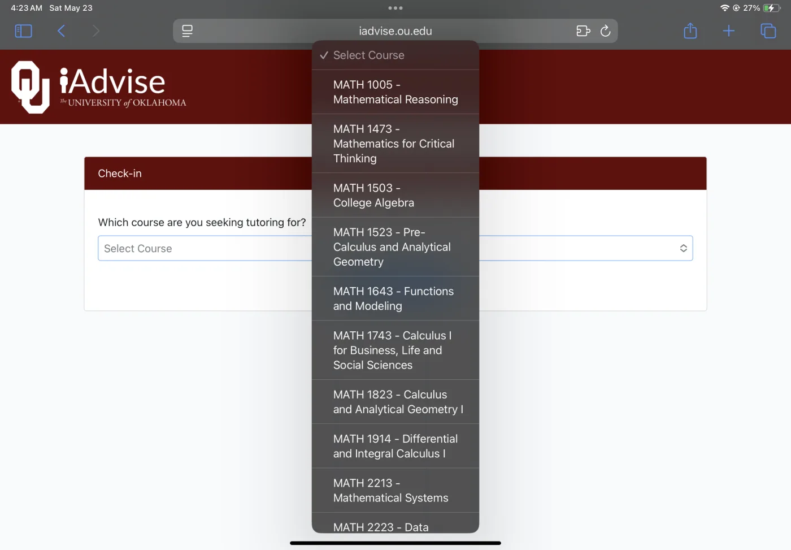
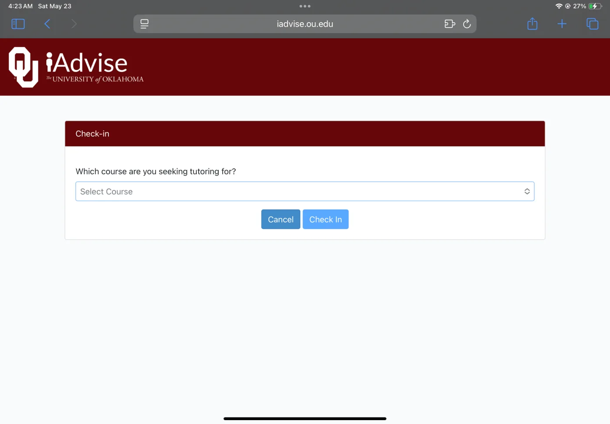
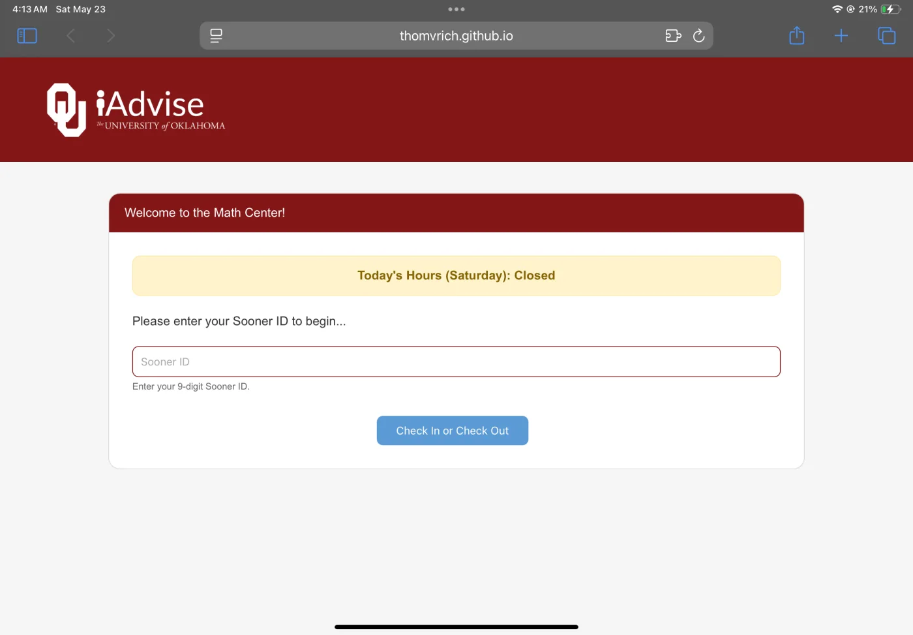
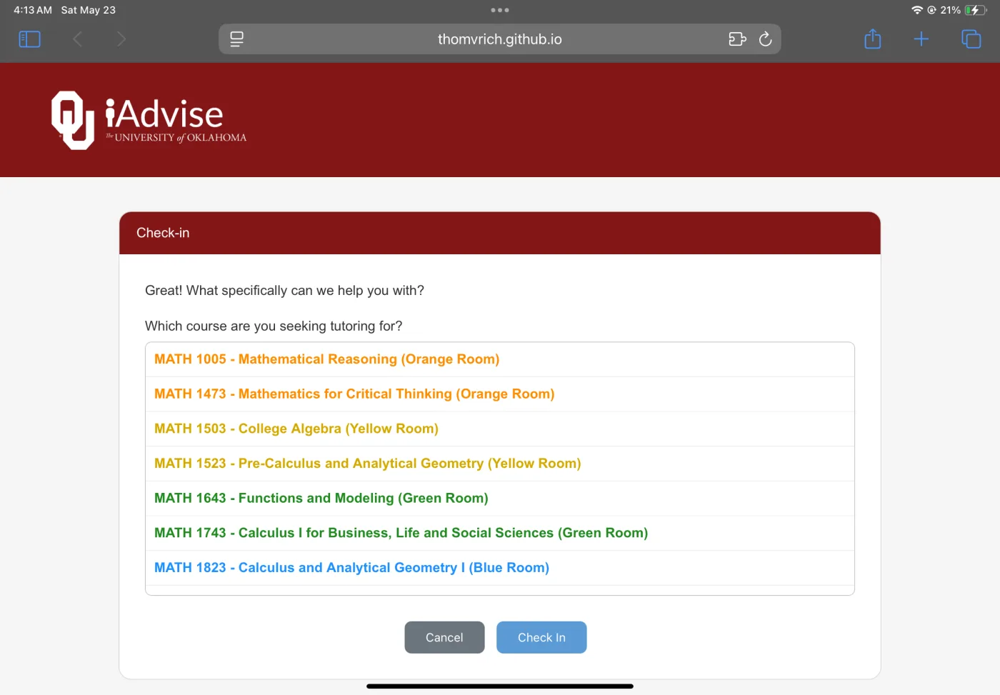
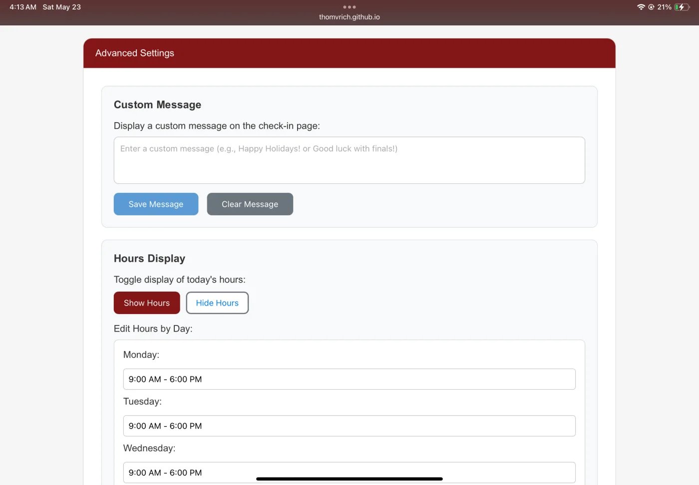

TL;DR
I created a rapid prototype for the OU Math Center Kiosk to address pain points I noticed as a Front Desk Assistant. I used first-hand user research (observations) and general design judgment to create a prototype that addresses the issues I saw and provides general UI updates.
Intro
At the time this rapid prototype was created, I had been working at the OU Math Center for about 2 years as a Front Desk Assistant. At the Math Center, users (students, employees, and faculty) sign in on an iPad at one of 3 Front Desks upon entry and sign out upon leaving. However, I noticed there were pain points for some students, so using first-hand user research (observations) and general design judgment, I created a rapid prototype in Claude to propose fixes to address the issues I saw and provide general UI updates.
Problems
I noticed that students were getting confused about how to sign out/check out when leaving the Math Center, as the button on the start page only says “Get Started.” I also noticed that students were getting lost finding the room for their math class; that was not the main issue.
Before



After



Other Decisions
I also took the opportunity to change the employee label, as it currently reads “Tutor Check-In (Not a Course),” even though both Front Desk Assistants and Tutors use it. That is also a pain point for new Front Desk Assistants.
I included some other features behind an admin panel accessible via the ID “11223434,” which houses the custom messages, hours display, and snow effects. The 11223434 was inspired by the Konami Code (up, up, down, down, left, right, left, right) as I love a good Easter egg, so I thought I’d go with the most iconic one.
The thought behind the custom messages was to spread good vibes around finals, “Good luck with finals!” and spread holiday cheer, “Happy Holidays!” Of course, this could be used for other reasons, such as announcing an early closure.
The hours display should help give students a general idea of our hours, and hopes to be a gentle reminder if they come in with 10 minutes left in the day.
The snow toggle was added at my friend's request and also serves as another way to spread some holiday cheer.
Status
The Math Center Director and Associate Director both liked it, and it is currently making its way up the chain at OU.
Takeaways
This project was a great opportunity to practice my rapid prototyping skills and apply design principles to a real-world problem. I learned a lot about the design process and how to use Claude to create a prototype. A huge thing I took away is that shipping code generated by AI is not applicable to all projects, but using it to generate prototypes and for personal projects is a great way to get started. Lastly, I learned that I enjoy the process of deciding what is made as opposed to actually making it, as there are many things I ended up leaving out of this project that I would have liked to include.